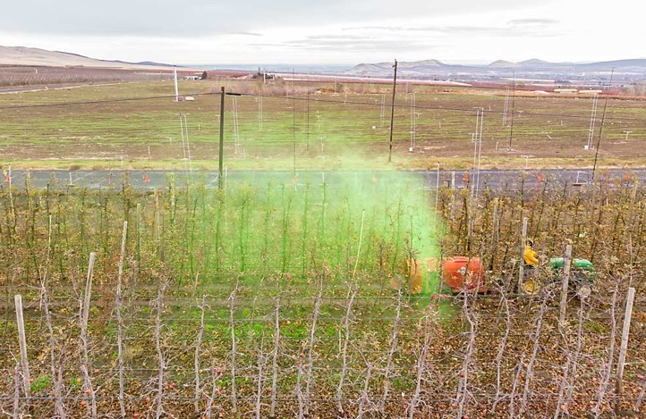
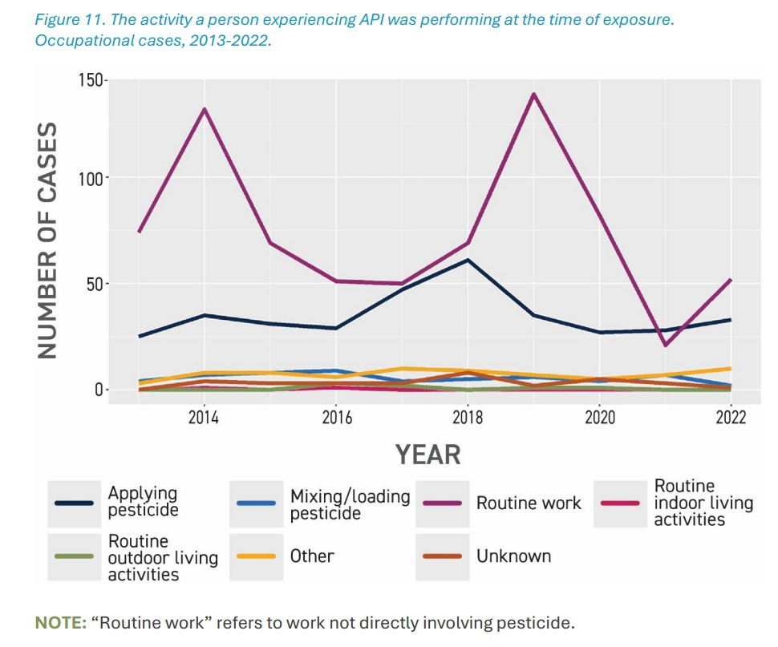

SHM 102: Occupational Health
Occupational Safety and Health Management
Yoni Rodriguez
Engineering Technologies, Safety, and Construction
Central Washington University
Introduction
- Who am I?
- What is occupational health?
- Where does occupational health fit?
- What will we do in this course?
Who am I?

Before CWU
Occupational Health Scientist
NASA
Education
B.S. Biochemistry
Washington State University
Graduate Training
University of Washington
Today
Assistant Professor
Central Washington University
Research Scientist
University of Washington
What is Occupational Health?
What is Occupational Health?
A working definition
“Occupational and environmental health is the study and prevention of health problems caused or influenced by the environments where people work, live, and interact.” - Centers for Disease Control and Prevention (CDC)
Where does Occupational Health occur?
- Do you get exposed on your way to work?
- Does the community nearby get exposed?
- Do you take the exposures home?
Why is Occupational Health important?
- Does this impact my health?
- Does this impact the health of my family?
- Does this impact the health of my community?
Current News

The New York Times, August 13, 2026.
Read the article →
Where is paraquat used?
Who is exposed?

Where was the applicator exposed?


Is the applicator the only person exposed?
Pesticide drift in Washington State

Source: Kasner et al. (2021), Environmental Health.
View study on PubMed →
What does more recent surveillance show?

Source: Washington State Department of Health.
Explore Washington pesticide surveillance data →